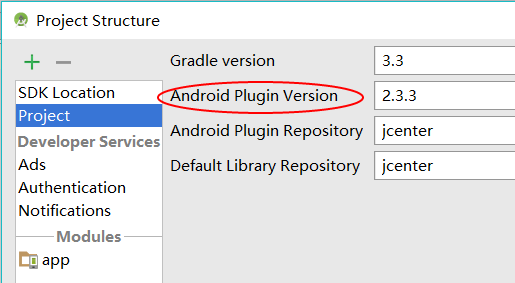

01_Android_Studio_gradle更新问题
Jul 19, 2017
Android studio gradle更新问题
问题：
Android studio 导入GitHub下载的新项目时，building项目过程中，由于项目要求的gradle版本和Android studio中的gradle版本不一致，会自动下载项目要求的gradle。下载过程异常慢，可能需要翻墙或者其他未知原因，导致Android studio卡住。
解决：
修改项目中要求的gradle版本号。
根目录\gradle\wrapper\gradle-wrapper.properties文件，文本工具修改其中一行：
distributionUrl=https://services.gradle.org/distributions/gradle-3.3-all.zip查询Android studio已安装gradle版本号。
C:\Users\你的用户名.gradle\wrapper\dists\gradle-3.3-all\子目录下gradle-X.X-all.zip修改项目中要求的gradle Android Plugin Version.
根目录\build.gradle文件，文本工具修改其中一行：
classpath ‘com.android.tools.build:gradle:2.3.3’查询Android studio已安装gradle Android Plugin Version.
File>>Project Structrue>>Project

- import project！
附加问题：
导入项目过程中，可能会提示项目要求的sdkVersion，toolVersion等诸多问题。可以通过修改build.gradle文件解决或者Android studio联网下载要求的版本也行。